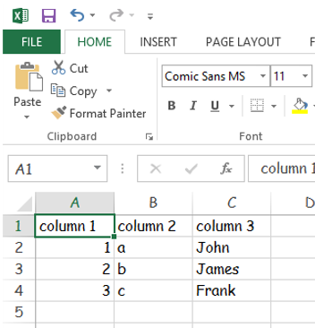
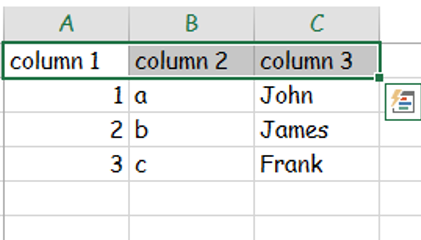
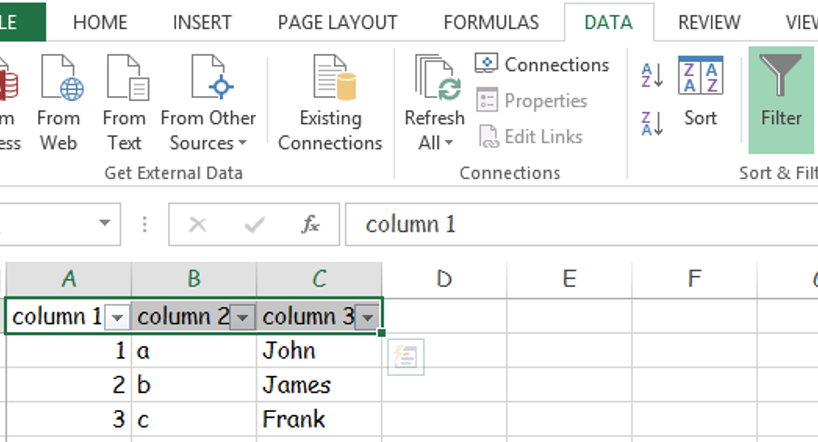
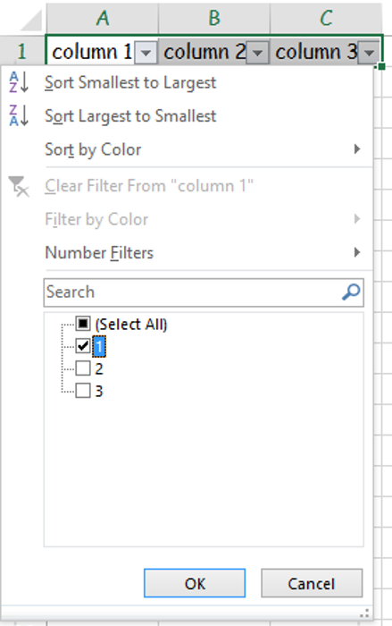
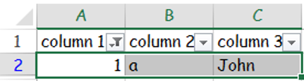

Perform a filter in Excel (this will work in 2007-2013)
1. Click in Cell A1

2. press and hold ctrl shift and press right

3. Click data and then filter and you will see arrows to the right of each of your headers

4. Click on the arrow in the right hand corner of A1 and uncheck the box next to select all and select 1.

5. Final Step: see results below:
